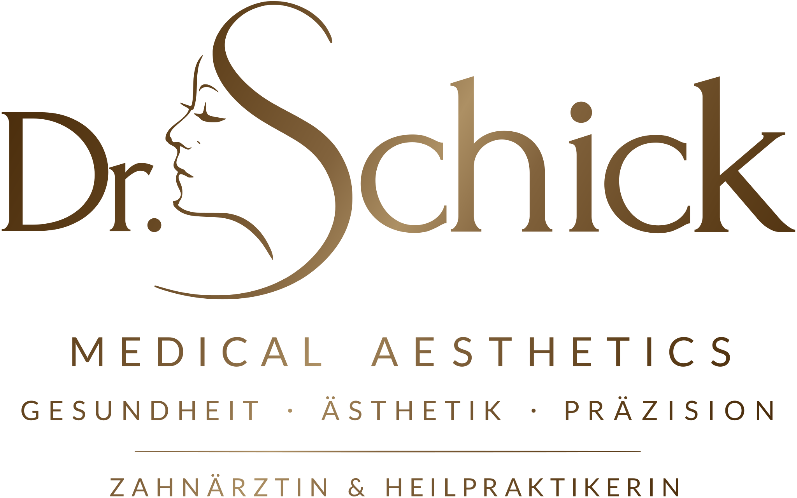

Schriften, Größen, Abstände und Farben für Designer und Druckereien

Dr-Schick-Bildmarke-…Forum Regular (400)
für „Dr.“ und „chick“
Google Fonts: fonts.google.com/specimen/Forum
Lato Regular (400), nur Großbuchstaben
für alle Zeilen unter dem Namen
Google Fonts: fonts.google.com/specimen/Lato
Beide Schriften sind kostenlos und stehen unter der SIL Open Font License. Sie dürfen in Logos, im Druck und auf Websites verwendet werden.
Gold-Verlauf, diagonal von links unten nach rechts oben: #442707 0 % · #5E3F1A 22 % · #82633D 40 % · #AD9064 50 % · #82633D 60 % · #5E3F1A 80 % · #442707 100 %
| Goldbraun – Hauptfarbe, einfarbig (Druck, Stempel, Stick) | #5E3F1A · RGB 94/63/26 · ca. CMYK 0/33/72/63 |
| Gold mittel | #82633D · RGB 130/99/61 |
| Gold hell (Glanz) | #AD9064 · RGB 173/144/100 |
| Gold dunkel | #442707 · RGB 68/39/7 |
CMYK-Werte sind Richtwerte; für Gold im Druck kann auch eine Sonderfarbe/Heißfolie verwendet werden.
Alle Werte für das komplette Logo mit 200 mm Breite (= 125,2 mm Höhe). Für andere Größen alle Werte im gleichen Verhältnis umrechnen: Faktor = gewünschte Breite ÷ 200 mm.
| Teil | Schriftgröße | Besonderheit |
|---|---|---|
| c, i, c | 161 pt | – |
| h | 167 pt | – |
| k | 169 pt | horizontal auf 110 % gestreckt |
| D | 128 pt | horizontal auf 111 % gestreckt |
| r | 114 pt | – |
| Punkt | 104 pt | – |
| S mit Gesicht | Grafik | Datei „Bildmarke“, 50,6 mm breit × 75,8 mm hoch |
Alle Buchstaben stehen auf einer gemeinsamen Grundlinie, 58,2 mm unter der Oberkante des Logos. Die Buchstaben sind einzeln an die Positionen des Original-Logos gesetzt; die Abstände bitte aus der Logo-Datei übernehmen.
| Zeile | Größe | Laufweite* | Grundlinie** |
|---|---|---|---|
| MEDICAL AESTHETICS | 28,8 pt | 320 | 92,1 mm |
| GESUNDHEIT · ÄSTHETIK · PRÄZISION | 19,1 pt | 290 | 105,6 mm |
| Trennlinie | 0,38 mm dick | 127 mm lang | 113,5 mm |
| ZAHNÄRZTIN & HEILPRAKTIKERIN | 17,9 pt | 240 | 124,8 mm |
* Laufweite in 1/1000 Geviert (Illustrator/InDesign „Laufweite“, Figma/CSS: 320 = letter-spacing: 0.32em, 290 = 0.29em, 240 = 0.24em).
** Abstand der Grundlinie von der Oberkante des Logos. Alle Zeilen und die Linie sind waagerecht mittig zum Logo ausgerichtet.
Die Mittelpunkte „·“ sind normale Mittelpunkte (U+00B7) in Lato mit einem großen Wortabstand davor und danach.
| Logo-komplett | Name, Bildmarke und alle Zeilen |
| Wortmarke | nur „Dr. Schick“ mit Gesicht (für kleine Flächen, Website-Kopf) |
| Bildmarke | nur das S mit Gesichtsprofil (Profilbild, Favicon, Stempel) |
| Formate | SVG und PDF (Vektor), EPS (Werbetechnik), PNG 4000 px (transparent) – jeweils in Gold, Braun, Schwarz und Weiß |